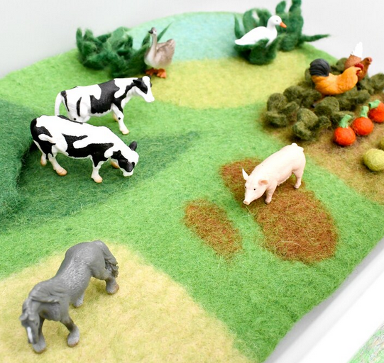
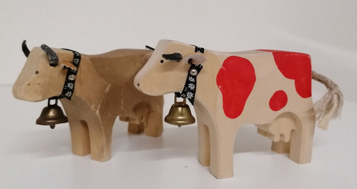
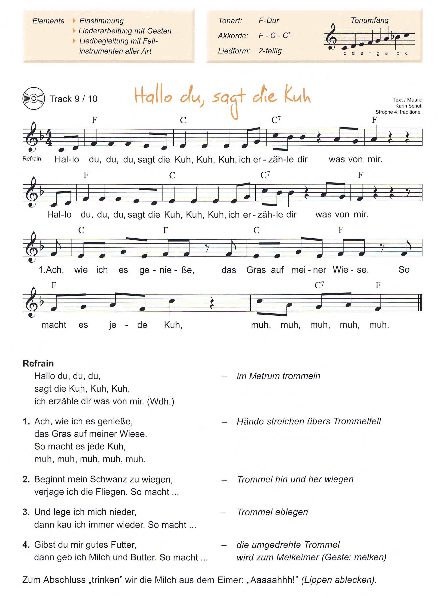
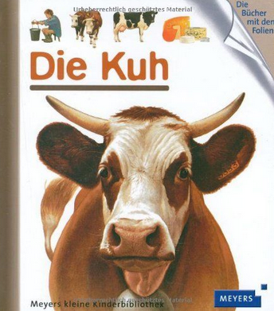

VB Kuhlied
VORBEREITUNG für den ...
Themenschwerpunkt: Bauernhof |
|---|
Bildungsinhalt: Liederarbeitung: „Hallo du, sagt die Kuh“ |
Bildungsbereich: Ästhetik und Gestaltung, Natur, Sprache |
Didaktisches Prinzip inkl. kurze Begründung: |
Sozialform: Teilgruppe |
Alter: Je nach Aufbau – 3-4jährige (nur eine Strophe…), 5-6jährige (zusätzlich ORFF-Instr.) |
Kompetenzen:
Das Kind kann…
Selbstkompetenz: …sein Selbstvertrauen stärken (singen in der Gruppe) …seine musikalischen Fähigkeiten erweitern …Freude am Reimen | Sozialkompetenz: …Freude am gemeinsamen Musizieren zeigen …Ideen mit anderen Kindern entwickeln | Sachkompetenz: …seinen Wortschatz erweitern: genießen, erzählen… |
|---|
Vorüberlegungen: |
|---|
Bildungsmittel/ Medien: Kuh-Handpuppe, 1 Flasche Milch, Butter, Käse, 2 Holzkühe, Gras/Filz, Kuhglocke, Kuhgeräuschdose, ORFF-Instrumente, Blockflöte |
Zeit | Ablauf | Methodische Hinweise |
|---|---|---|
Motivation Ein-stimmung Hauptteil Vertiefung Ausklang/ Übergang Weiter-führende Ideen | Die Kinder werden von mir mit der „Kuhhandpuppe“ abgeholt: Die Kinder schließen ihre Augen und ich spiele die Kuhglocke oder Kuhgeräuschdose an – die Kinder sollen das Geräusch erraten/beschreiben. In der Mitte des Kreises steht eine Flasche Milch, ich öffne sie vorsichtig und lasse jedes Kind einmal riechen – die Kinder sollen ihr Eindrücke kurz beschreiben oder/und Kurzes Sachgespräch: Ich singe den Refrain vor und zeige bei „du,du,du“ mit der Kuhhandpuppe in die Kreisrunde – beim restlichen Text wiegt die Kuhhandpuppe im Takt zum Lied: Nun zeige ich zum Text Bewegungen dazu, damit die Kinder das Lied ganzheitlich erfahren können: „Du, du, du“ – mit dem Zeigefinger auf einzelne Kinder zeigen. Kinder versuchen Teile des Refrains teilweise nachzusingen, nachdem dieser mehrmals von mir wiederholt wurde. Kurzes Zwischengespräch: Zum Liedtext der 1. Strophe wird „Gras“ in Form von Filz o.ä. und eine Holzkuh in die Mitte des Kreises gestellt. Wiederholung: Beim Refrain Gras austeilen, , 5.2.2022. Strophe 2-4 werden je nach Aufmerksamkeit der Kinder ebenfalls mit Materialien wie Strophe 1 erarbeitet. Varianten: Dynamik: Das Lied betont/leise, schnell/langsam, Steigerung: Bewegungen am Stand im Kreis ausspielen Orff-Instrumentarium zur Verfügung stellen.: (nur ältere Kinder) Alle Kinder bekommen ein Instrument oder dürfen selbst eines auswählen. WICHTIG – EXPERIMENTIERPHASE!! Instrumente bieten sich vor allem beim Refrain an: Konkrete Begleitung für ältere Kinder: Xylophon: Bordunbegleitung (Immer gleicheTonzusammenstellung) oder Tonika (F) und Dominante (C) als Basis (1. und 5. Stufe) Geräuschinstrumente im passenden Rhythmus: BSP 4/4: 1,2,3,4…Begleitung nach Liedtext: Die Kinder dürfen mit zusätzlichen Materialien in der Kreismitte einen Bauernhof gestalten/bauen, während das Lied gesummt/gesungen wird: , 5.2.2022. Der Käse wird aufgeschnitten und verkostet oder gemeinsam mit den Kindern werden für die Jause Butterbrote mit Käse zubereitet. Aufnahme auf ein Multimediagerät (Dvd, Cd) bzw. Präsentation des Liedes vor Publikum (andere Kindergartengruppe), bei einer Festgestaltung etc. Kühe aus WC-Papierrollen, Papptellern, Holzkreisen gestalten Kühe auf einem Bauernhof bestaunen Schönes und Interessantes – Kuhfell, Kuhglocke, Kuhtiere aus unterschiedlichen Materialien, Sachbilderbuch/Kuh: | Kinder neugierig machen Auditive Wahrnehmung wird angesprochen Olfaktorische Wahrnehmung wird angesprochen Eigene Erlebnisse schildern können und dadurch seine sprachlichen Kompetenzen erweitern Liedanalyse: Tonart: F-Dur Taktart: Reimwörter: Aufwärmen der Stimme: Du, du, du, Kinder auf den Inhalt des Liedes mit Bewegungen vorbereiten Bewegung und Liedtext koordinieren Durch Wiederholungen Teile des Liedes verinnerlichen Sachwissen über Kühe erfahren und erzählen können. Durch ästhetische dreidimensionale Materialien, den Inhalt des Liedtextes veranschaulichen Mit musikalischen Mitteln/ der Stimme experimentieren Grobmotorik/Gestik Durch abwechslungsreiche Varianten den Inhalt des Liedes vertiefen Begriffsbildung bzw. Wortschatzerweiter- Konkrete Rhythmusvorgaben nachahmen können Wechsel zwischen Spannung und Entspannung bewusst erleben |
Abbildungen aus dem Dokument




